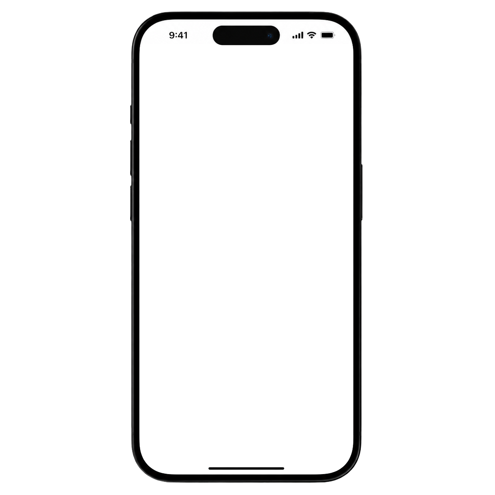
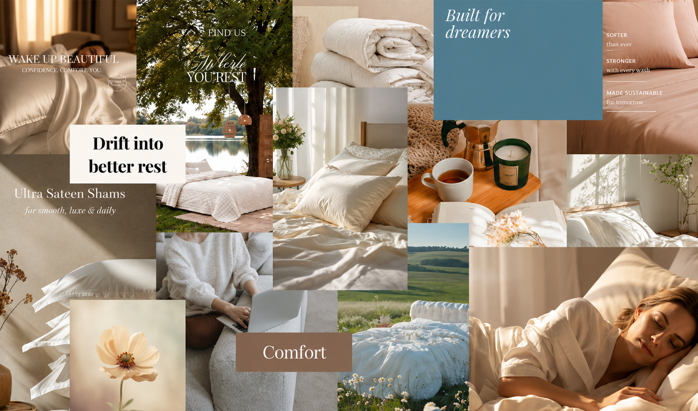
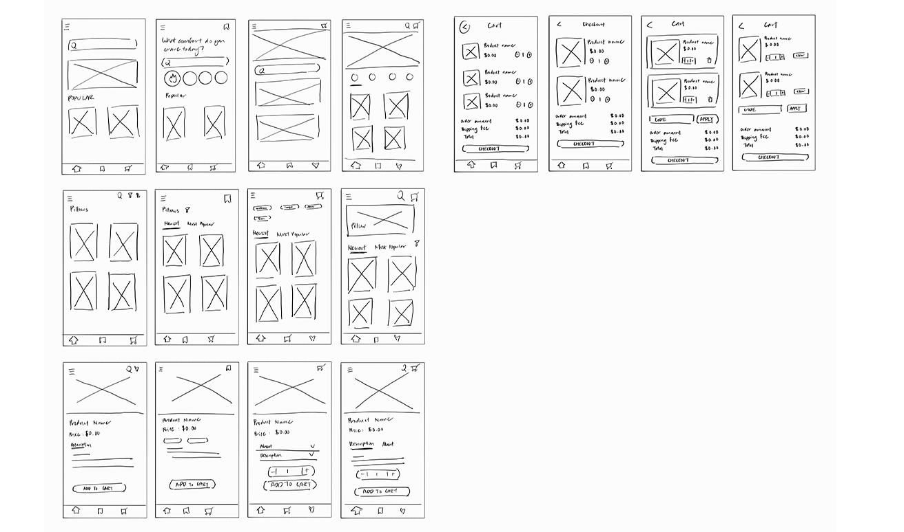
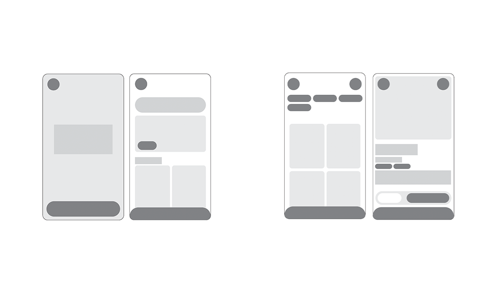
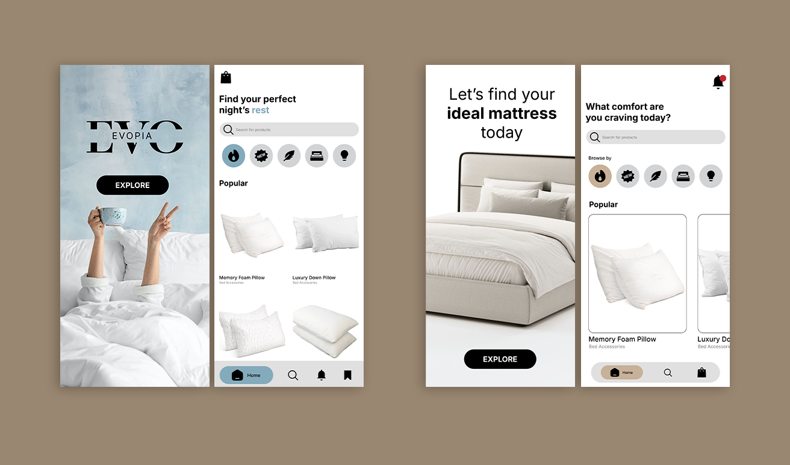
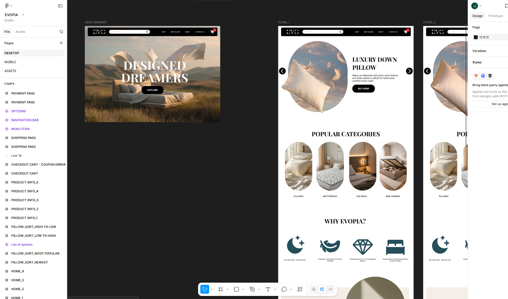

2026
Evopia
Designed for dreamers.
Desktop Version
Interact with the screen

Mobile Version
Interact with the screen

Designed for dreamers, wherever they are.
Evopia's mobile experience brings the same calm and immersive atmosphere to smaller screens. From product discovery to checkout, interactions were carefully adapted to create a seamless shopping journey that feels intuitive and effortless.
Timeline

Evopia was conceived around the idea that sleep is more than a necessity. Early visual explorations focused on soft textures, natural light, and peaceful environments to evoke feelings of comfort and restoration. These themes guided the development of both the brand identity and the final website experience.

Every experience begins with structure. These low-fidelity wireframes explored the hierarchy, navigation, and interaction patterns that would later shape Evopia's final interface. By separating usability from aesthetics, I was able to iterate quickly and establish a strong foundation for the user experience.

Once the overall architecture was defined, I explored mid-fidelity layouts to refine content placement and user interactions. This stage provided an opportunity to iterate rapidly and ensure a cohesive experience before applying the final visual identity.

Building upon the foundations established in earlier stages, I explored various visual directions to define Evopia's identity. Drawing from themes of comfort and tranquillity, I developed a warm and minimalist interface that emphasises clarity, atmosphere, and ease of navigation.

The final interface was constructed and organised in Figma, allowing components, layouts, and interactions to be refined before development. This process provided a clear foundation for translating the design into a fully functional website.